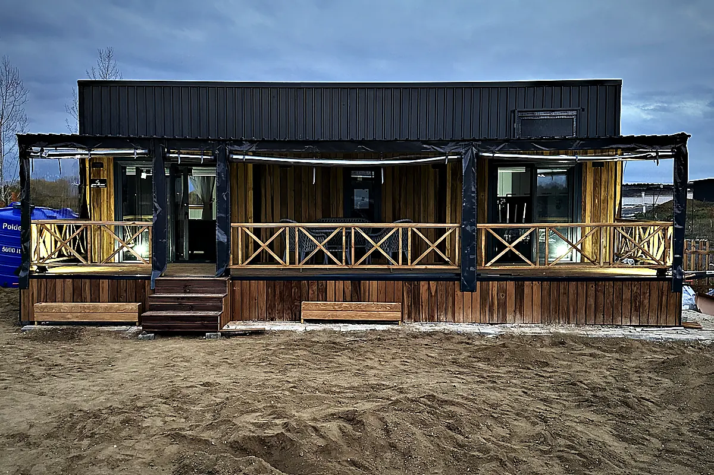

Tiny house on the Baltic coast
The Baltic coast is seasonal country: seaside resorts, marinas and campsites from the Flensburg Fjord to Usedom, with a summer that carries everything and a winter in which most units stand empty. What a tiny house has to withstand here is salt air, wind off the sea and damp — and what it has to deliver is a summer full of changeover days.
On the Baltic, facade, fittings and glazing are chosen for salt air, wind and damp, and the services are planned for a unit that is densely booked in summer and mostly empty in winter. The town pages of the region lie in Schleswig-Holstein and Mecklenburg-Vorpommern; what applies there under planning law is on the two state pages, with the official source.
What the coast demands of a unit
Fifty metres from the water a unit ages faster than inland if it was not chosen for it. Salt air attacks metal, wind drives rain into every joint, and damp finds the coldest corner. So on the Baltic the facade variant, fittings and glazing are chosen for the site and the structure is ventilated and drained so that damp does not linger. Which components that concerns and why is on the quality page.
Wind is also a question of placement: orientation to the weather side, terrace in the lee, anchoring of the supports on the ground. That is decided per pitch, not across the board.
Seasonal operation: full in summer, empty in winter
Most units on the Baltic are rental units on campsites, in holiday parks or at marinas, and they live from a season that runs from Easter into October. That changes the planning: a layout for guests, cleaning time on changeover day, delivery outside the season, shutting down in October. The practice series covers each of these points in a post of its own.
Whether a unit may stay over winter is decided by the site's permit and the site rules — not by the house. In seaside resorts with strict local design statutes the appearance also goes on the table early.
Who typically plans here
On the Baltic it is above all campsites and glamping operators, marinas and yacht harbours with overnight units, and holiday parks along the coast. Each of these operator types has its own page with what to clarify before enquiring.
What applies under planning law is on the state page, with the official source:
Who typically plans here
Campsite & glamping
Rental units that fit the site rules and arrive outside the season.
Overnight stays by the waterMarina & coast
Overnight units by the water, specified for salt, wind and damp.
Units in seriesHoliday park & resort
Identical units in series, calculated against operator rules and running costs.
275 places in the Baltic coast region
Assigned geographically by coordinates and state — an orientation, not an official boundary. The town pages are in German.